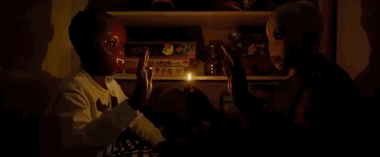

Us is a 2019 American psychological horror film written and directed by Jordan Peele, starring Lupita Nyong'o, Winston Duke, Elisabeth Moss, and Tim Heidecker. The film follows Adelaide Wilson (Nyong'o) and her family, who are attacked by a group of menacing doppelgängers.
De film is een perfect exemplaar van een goede horror film. Us beklijft en vermaakt vanaf de creepy Alice in Wonderland-achtige openingsscène in een spiegelpaleis, tot het even prachtige als onheilspellende eindshot. Peele laat de actie lekker vlot op gang komen en houdt tempo én timing goed in balans. De Wilsons trakteren stuk voor stuk op strak acteerwerk, zelfs de kinderen. 